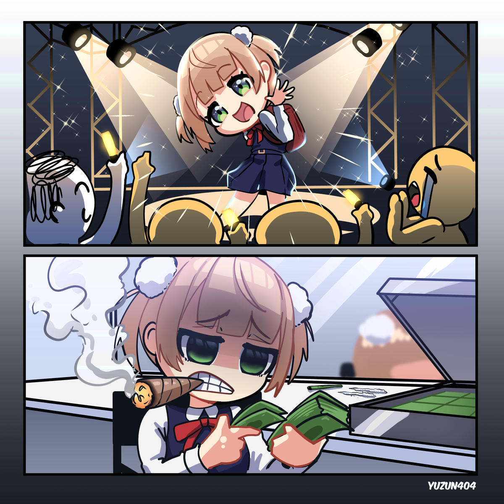

社交即表演#
在社交媒体中看到如下一张插图：

虽然我不认识图中人物是哪个动漫角色，但是图中描述的故事还是非常易于理解：在舞台上受到万人追捧的明星偶像，其在非公开场合的形象可能与舞台上塑造的形象是截然相反。
“反差”一词是一个中性词，有人极端厌恶表里不一，有人反而非常喜爱。在信息传播源门槛极低的现代社会，任何社交行为实际上都可以被视为是在舞台上演戏：
政治与商业场合的尔虞我诈。
从事第三产业人员与客户的交流。
各种镜头前的形象塑造。
办公室政治中的明争暗斗。
亲友之间的相处方式。
甚至自我对话中的多重人格。
极端厌恶表里不一的人会认为如果任何社交都是表演，那么整个社会都不存在真相；非常喜爱反差形象的人会认为如果任何社交都是表演，所有人都在互相博弈看谁的障眼法更高超，那么整个社会就像一个大型攻防游戏，其乐无穷。
这场大型攻防游戏的核心玩法就是：
知己知彼，百战不殆。 —— 《孙子兵法 · 谋攻篇》
能够站在对方角度思考如何防御自己的攻击和如何反击自己，从而制定合适的多策略。最终达到出神入化的境界就是：
出淤泥而不染，濯清涟而不妖。 —— 《爱莲说》
2025.9.16